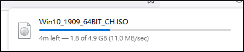
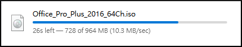
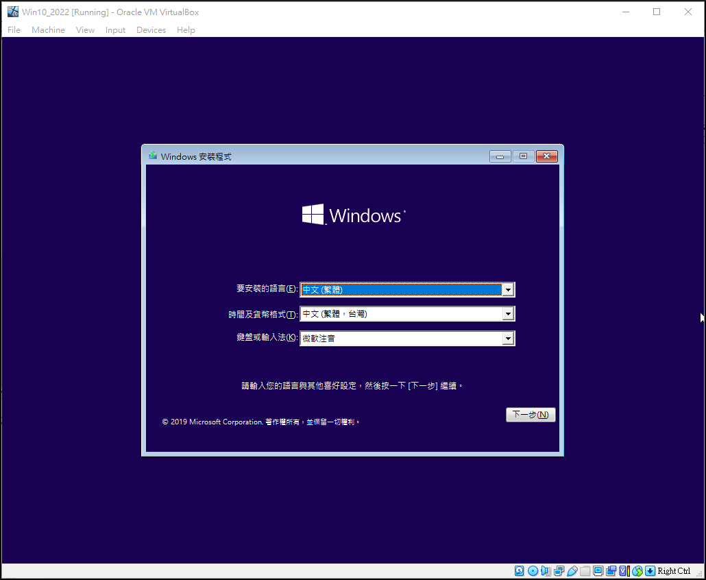

簡要說明 2022 Fall 在綜一館八樓的電腦網路使用與觀察.
實際觀察
註: 以下的相關下載連結, 必須登入學校下載中心主機, 或者使用校內網路才能下載. 而各種教育版套件則必須透過校內 VPN 登入後, 才可進行認證.
為了方便, 接下來將要從學校下載目前可以取得的 1909 64 位元 Windows 10操作系統 (for nfu intranet only), 並且利用 Virtualbox 安裝為虛擬機. 因為這個教育版的 Windows 需要每半年進行認證更新, 因此還要同時下載 認證批次檔 (for nfu intranet only). 另外若要配合仍廣為流行的 MS Office, 可以再下載 Office 2016 (for nfu intranet only) 版, 以及認證用的 Office_2016_KMS.bat (for nfu intranet only).
下載 Windows 10 與 Office iso 畫面:


Virtualbox 安裝
接下來利用 Virtualbox 安裝 Windows 10, 可以得到 Win10_2022_20H2.7z (for @gm users) (Win10_2022_20H2.7z @nfu) 檔案.

同一個 Virtualbox 應用程式下的虛擬硬碟檔案, 其 uuid 不可相同, 因此若直接從某一虛擬檔案複製在同一台 Virtualbox 進行設定之前, 必須更改其中一個檔案的 uuid.
更改硬碟檔案的 uuid:
vboxmanage internalcommands sethduuid win10_21H2.vmdk
查詢虛擬硬碟檔案的 uuid:
vboxmanage.exe" showhdinfo win10_2022.vdi
刪除虛擬硬碟中的無用檔案 (通常已經在虛擬主機中, 將硬碟重組並刪除無用檔案後, 以 sdelete c: -z 將系統沒有使用的磁區, 逐一寫入 zero):
vboxmanage.exe modifymedium --compact disk win10_2022.vdi
這裡必須特別注意的是: 目前 vboxmanage 只能對 .vdi 執行 compact, 不適用於 .vmdk 虛擬機檔案.
NAT 上網
經過上述 Windows 10 虛擬主機安裝後, 得到 Win10_2022_20H2.7z (for @gm users) (Win10_2022_20H2.7z @nfu) 檔案, 可以在實體的 Windows 10 或 Ubuntu 操作系統中以 Virtualbox
若要在同一台實體主機設定源自同一虛擬主機檔案的多台電腦, 可以更改硬碟檔案的 uuid:
vboxmanage internalcommands sethduuid win10_21H2.vdi
啟動 虛擬 Windows 10 之前, 查驗一下記憶體給定 4GB, 並且採用 NAT network 模式後開機. NAT 的網路設定就是讓虛擬機模擬以實體主機的網路卡作為 NAT 的對外通道, 讓虛擬機可以經由實體機的網路連線上網.
NAT 這時可以視為虛擬主機的防火牆, 外部電腦在無 NAT port mapping 的情況下, 無法直接連線到虛擬主機.
更改硬碟檔案的 uuid:
vboxmanage internalcommands sethduuid win10_21H2.vmdk
在使用 Windows 10 代理主機設定過程, 若發現無法手動儲存 Proxy 設定時, 可以將 Proxy 設定寫入:
電腦\HKEY_CURRENT_USER\SOFTWARE\Microsoft\Windows\CurrentVersion\Internet Settings\ProxyServer 字串值中.
也可以透過 Windows 10 登錄檔案 (Registry) 進行設定, 以滑鼠左鍵雙點擊下列 manual_proxy_setting.reg 即可完成設定:
Windows Registry Editor Version 5.00 [HKEY_CURRENT_USER\Software\Microsoft\Windows\CurrentVersion\Internet Settings] ; disable AutoDetect "AutoDetect"=dword:00000000 "MigrateProxy"=dword:00000001 ; enable Proxy "ProxyEnable"=dword:00000001 "ProxyHttp1.1"=dword:00000000 "ProxyServer"="http://[2001:288:6004:17::42]:3128" "ProxyOverride"="localhost;"
NAT 內定使用 IPv4
當我們使用 Virtualbox Windows 10 虛擬主機, 利用 NAT 作為聯外網路設定時, default 只能使用 IPv4 網路協定.
假如要讓虛擬主機使用更有彈性的 NAT 網路機制, 可以從 Network 設定中轉用 NAT Network 設定, 首先在 Virtualbox Manager - File - Preferences - Network - NAT Networks 項目中新增一個 NATNetwork, 開啟 edit 編輯模式, 內部網段使用 10.0.2.0/24, 打勾 Support DHCP. 當虛擬主機關機後, 重新設定 Network 後重開後選用 NAT Network, 就可以使用此項設定.
因此, 假如同一台實體主機中有多台採 NAT 上網的虛擬主機, 就可以利用 NAT Networks 選擇各種內部網路協定與連線架構.
採用 NAT Network 設定的虛擬主機雖然也能透過 Port Forwarding 擔任伺服器, 但是只能與實體主機共用聯外的網路線, 假如要將虛擬主機當作 server, 且採實體網路線聯外, 可以將 Network 設為 Bridged Adapter.
虛擬主機 Win 認證
前面提到, 使用學校購買的 Windows 10 操作系統, 每半年必須在校網進行認證, 由於目前的認證設定主機只允許 IPv4 網路協定進行, 因此假如 Virtualbox 實體主機帶有外部 IPv4 網路位址, 附屬於其下的虛擬主機若無外部 IPv4 address 可以設定, 最佳認證方案是, 在既有的網路卡設定模式下, 新增一個採用 NAT Networks 網路卡 (一台虛擬主機最多可以新增 36 片虛擬網路卡), 就能以實體主機的 IPv4 作為 NAT 外部 IP, 而完成 Windows 10 操作系統的使用授權認證.
假如實體主機位於校外, 只要讓實體主機透過學校的 VPN 聯網, 然後再依上述 NAT Networks 方式進行第二片網卡的設定, 就可以每 180 天順利完成認證.
Virtualbox 網路卡巡禮
接下來將要在同一台虛擬主機上啟動四片網路卡 (這是 GUI 介面允許的數量, 若要再增加必須使用設定檔案進行).
其中分別包括: NAT Network, Bridged Adapter, Internal Network 與 Host-only Network 等.
NAT Network 使用時機
NAT Network 的使用前面已經提過, 可以讓虛擬主機透過實體主機的網路上網, 且 NAT 扮演防火牆的任務, 若要在虛擬主機中啟動伺服器服務, 則可以利用 Port Forwarding 的方式設定. 由於經過 NAT 之後是採實體主機的 IP 聯網, 因此若實體主機帶有 IPv4 協定位址, NAT Network 設定的虛擬主機可以順利完成 Windows 10 操作系統的使用授權認證.
Bridged Adapter 使用時機
選用 Bridged Adapter 網路卡設定的目的在於讓虛擬主機可以對外擁有實體網路連線的頻寬, 最適合用於作為虛擬伺服器. 啟動橋接網卡後的虛擬主機網路定位與實體主機相同, 兩者可循同一條實體網路線聯網, 或者各自使用一條實體網路進行連接.
Internal Network 使用時機
Internal Network 的基本運作機制與橋接網卡相同, 都能透過實體網路卡從虛擬主機聯外, 但不同點是, 橋接網卡設定後, 其網路位階與實體主機相同, 必須應付廣域網路上的各種封包, 彈性雖高, 但較不安全. 而 Internal Networks 設定的聯網機制是由 Virtualbox 自行設定, 且不一定要依附到實體網路連線. 假如設定過程需要實體主機下的 Internal Network 電腦群彼此連網, 但不聯外網, 就適合採用 Internal Network.
Host-only Network
Host-only Network 可視為 Bridged Adapter 與 Internal Network 的 Hybrid 設定模式, 就網路連線上, 可以如 Bridged Adapter 採實體網路線聯外, 並且具有 Internal Network 的特點, 彼此相連但與外網隔絕.
在進行上述四種網路設定過程, 可以針對需求開啟或關閉特定網路卡, 以便在不同實際需求下進行設定.
網路實況觀察
首先在虛擬主機中只開啟 Bridged Adapter, IPv4 與 IPv6 都採 DHCP 方式取得 IP 位址.
結果: 有一台 MAC 為 00-e0-98-29-9c-70 的硬體, 設為 192.168.1.1 啟動 DHCP server 在發送 192.168.1.X 內部 IP.
從 https://www.cleancss.com/mac-lookup/00-E0-98 可以查到這台硬體網卡的資訊:
Devices with MAC addresses that start with 00-E0-98 were manufactured by AboCom Device Manufacturer AboCom Manufacturer Location 12F-3, NO. 333, SEC. 1 HSIN-CHU 12345 Estimated Devices using 00-E0-98 16,256,250 Estimated Total Devices From Mfg 48,768,750
根據判斷, 這應該是一台 Wifi Router, 誤將應該連接內部網路的接頭聯外.
至於 IPv6 的網段, 雖然成功從校方 DHCP 6 取得系上聯外 IPv6 位址, 但是該伺服器並沒有設定 DNS, 因此採 IPv6 網路協定自動擷取 IP 位址的電腦, 必須自行設定 DNS 伺服器.